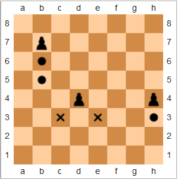
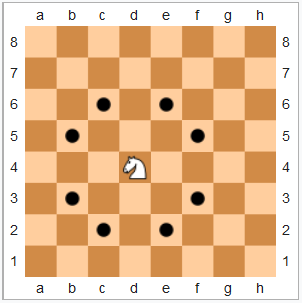
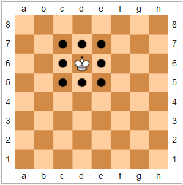
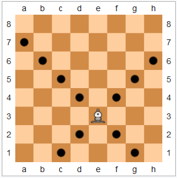
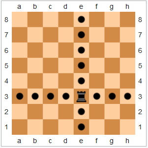
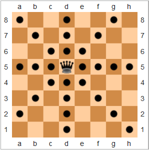
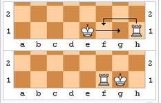

LE DEROULEMENT
Jouer un coup consiste à effectuer un déplacement de l'une de ses pièces, accompagné éventuellement de la capture d'une pièce adverse se trouvant sur la case d'arrivée de la pièce jouée. Si l'on décide de déplacer sa pièce sur la case occupée par une pièce adverse, on retire cette pièce adverse de l'échiquier : elle a été prise. Aux echec aucune prise n'est obligatoire aux échecs (à l'exception des cas où les seuls coups légaux pour parer un échec consistent à prendre la pièce adverse qui administre cet échec). Un joueur gagne la partie lorsqu'il réussit a prendre le roi adverse, on appelle cela un "echec et mat" (lorsque l'on parle d'un echec il s'agit de la situation ou un joueur à l'occasion de prendre le roi de son adversaire au prochain tour si il n'y a pas de déplacement de pièces adverse.).
LES DEPLACEMENTS
Dans le jeu d'echec chaque type de pièces a un déplacements different.
Les pions : Ils ne peuvent avancer que d'une case devant eux, et ne peuvent prendre des pièces que en ce déplaceant d'un case en diagonale (ils ne peuvent pas prendre une pièce en reculant).
Le cavalier : Il est la seule pièce « sauteuse » du jeu. Depuis sa case de départ, il « saute » directement sur sa case d’arrivée, grâce à son déplacement singulier : il se déplace d'une case dans une direction horizontale ou verticale (comme une tour) puis d'une case dans une direction en diagonale (comme un fou) ; on dit alors qu'il se déplace en « Y ».
Le roi : Le roi se déplace d'une case dans n'importe quelle direction.
Le fou : se déplace en suivant les diagonales, on remarque qu'il se déplace toujours sur les cases d'une même couleur.
La tour : se déplace en suivant les colonnes ou les rangées.
La dame cumule les déplacements de la tour et du fou, cela en fait la pièce la plus puissante du jeu.
Le roque : Cela consiste à déplacer en un seul coup le roi et l'une des tours. Il y a deux façons de roquer :
avec le roi et la tour de la colonne h, ce déplacement s'appelle le « petit roque » ;
avec le roi et la tour de la colonne a, ce déplacement s'appelle le « grand roque » car la tour effectue un déplacement plus grand (une case de plus).
Dans les deux cas, on procède ainsi : on déplace d'abord le roi de deux cases vers la tour puis, avec la même main, on fait passer la tour de l'autre côté, juste à côté du roi (voir le diagramme ci-contre). Les conditions suivantes sont nécessaires pour pouvoir roquer : aucune pièce ne se trouve entre le roi et la tour concernée ; le roi et la tour concernée n'ont encore jamais joué ; le roi n'est pas en échec ; case traversée par le roi n'est contrôlée par aucune pièce adverse.